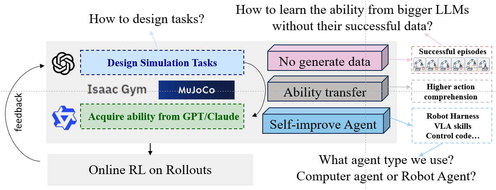

Robot-Use Agents with LLMs：范式演进、实证结果与未来方向
在具身智能领域，基于大模型推理与 Agent 闭环控制来驱动仿真训练与真机迁移（Robot-Use Agent, RUA）正成为继端到端 VLA 之后的新兴范式。然而，开源与闭源底座如何选择、Harness 应薄还是厚、RL 后训练与在线自我改进如何权衡，目前尚未形成统一范式。本专题系统拆解 2026 年最具代表性的六篇前沿工作。
六篇核心文献速览与机制精读
六篇论文核心结果多维可视化对比
—
—
—
我们的思路：闭源任务设计 × 开源空间动作固化 × 在线 RL 闭环
现实部署中不可能为每台双臂或人形机器人持续实时调用昂贵的闭源前沿大模型。我们的核心思路是：由闭源 LLM 负责实验与仿真任务设计，驱动小参数开源 LLM 在 MuJoCo / Isaac Gym 中探索并固化对空间与动作的理解，随后在真实与在线 Rollout 数据上进行强化学习，并将结果反馈给闭源 LLM 进行下一轮任务重构。

闭源大模型设计仿真任务
利用 GPT / Claude 的高层规划与物理先验，在 MuJoCo、Isaac Gym 等仿真器中为双臂及人形机器人设计多样化实验与课程任务。
空间与动作理解迁移固化
不依赖闭源模型直接生成海量成功轨迹（No generate data），而是让小参数开源 LLM 在仿真中探索动作，将高阶空间/动作理解与动作空间固化到开源权重中。
真实与在线 Rollout 强化学习
开源 LLM 本身已具备基础视觉感知，在补齐空间与动作理解后，直接在真实与在线 Rollout 数据上执行强化学习，摆脱对闭源实时推理的依赖。
闭环反馈与任务重构
将在线 RL 的执行表现、失败案例与能力边界回传给闭源 LLM，自动触发下一轮针对性的任务设计与 Agent 自我演进。
如何引导闭源 LLM 自动构造覆盖双臂协同与人形控制的高价值仿真任务与难度课程，避免无效探索？
在不依赖闭源大模型直接采集成功轨迹（No generate data）的条件下，如何高效地把高阶空间与动作理解能力迁移并固定到小参数开源 LLM 中？
底层自我进化智能体应采用通用 Computer-Use 范式，还是面向物理控制的专用 Robot Harness（VLA skills / Control code）？